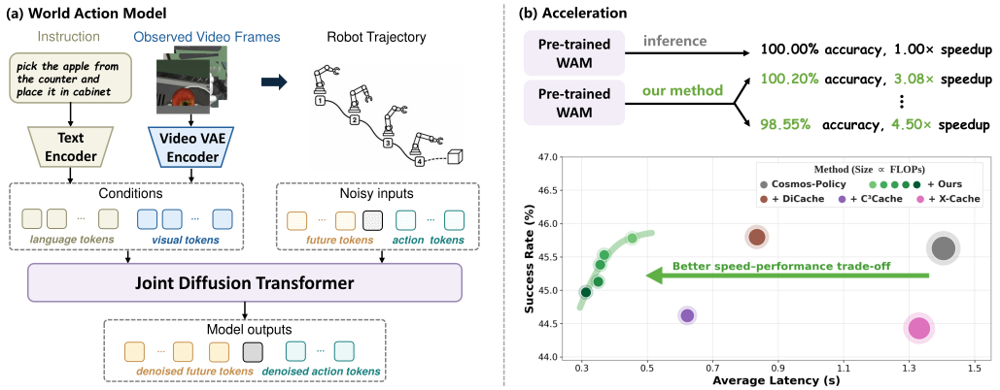

Within a diffusion step
Redundancy-Aware Attention Skipping
Skips low-impact self- and cross-attention computation while preserving components important for action generation.
Training-free inference acceleration for World Action Models
VaLuE Lab, Peking University
World Action Models (WAMs), which jointly predict future world states and robot actions, are emerging as a promising alternative to Vision-Language-Action models. Yet current WAM acceleration methods typically exploit redundancy along only one computational axis, leading to limited speedups or degraded task performance.
We introduce MARS, a training-free, multi-level inference framework that removes redundant computation across Transformer blocks, diffusion denoising steps, and consecutive action chunks. The three mechanisms integrate into pretrained WAMs in a plug-and-play manner, delivering up to 4.0× speedup on LIBERO/LIBERO-PRO and 2.1× on RoboCasa while preserving task performance.

MARS targets complementary redundancy within a diffusion step, across denoising steps, and across consecutive action chunks.
Within a diffusion step
Skips low-impact self- and cross-attention computation while preserving components important for action generation.
Across denoising steps
Routes each query between direct one-step generation and residual-reuse multi-step sampling according to motion granularity.
Across action chunks
Uses shallow VAE features to verify temporal consistency before reusing predicted future visual tokens.
End-to-end acceleration on Cosmos Policy, measured with matched three-seed evaluation.
| Benchmark | Method | Success rate | Speedup | Latency |
|---|---|---|---|---|
| LIBERO | Cosmos Policy | 98.05% | 1.00× | 1.4001 s |
| MARS (Speed) | 97.42% | 4.00× | 0.3498 s | |
| MARS (Accuracy) | 98.12% | 3.17× | 0.4414 s | |
| LIBERO-PRO | Cosmos Policy | 45.63% | 1.00× | 1.4044 s |
| MARS (Speed) | 45.53% | 3.94× | 0.3564 s | |
| MARS (Accuracy) | 45.72% | 3.08× | 0.4558 s | |
| RoboCasa | Cosmos Policy | 66.69% | 1.00× | 2.2958 s |
| MARS | 66.94% | 2.10× | 1.0911 s |
Cross-backbone generalization
MARS transfers beyond Cosmos Policy to additional WAM and VLA backbones without retraining.
Paper and BibTeX will be added upon release.
Follow the repository for updates →